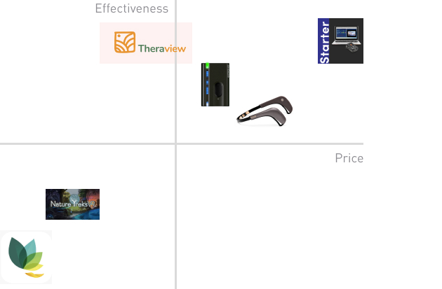
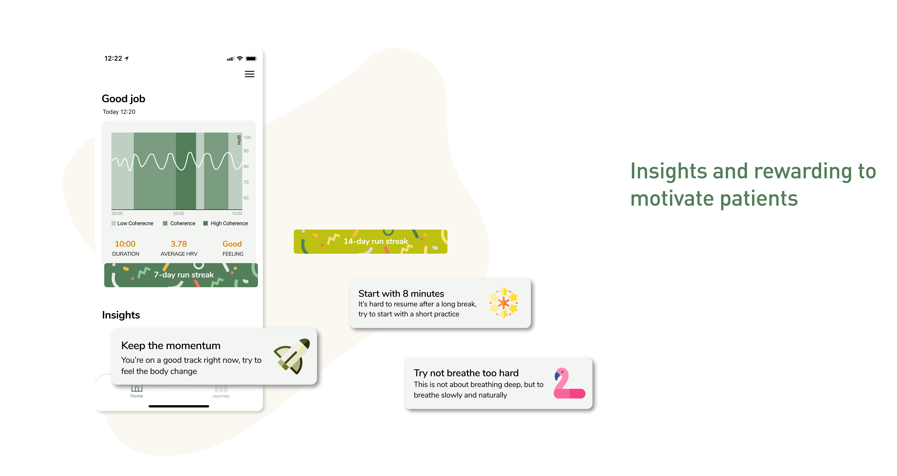
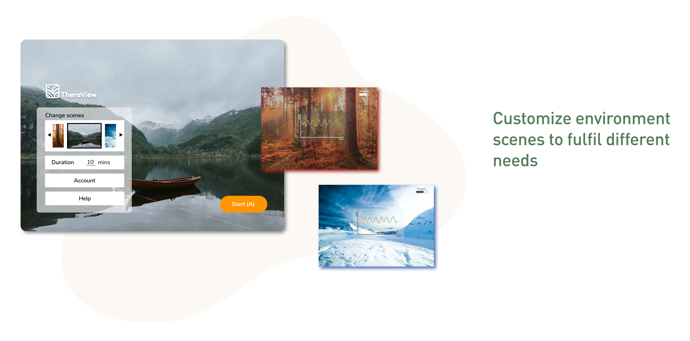
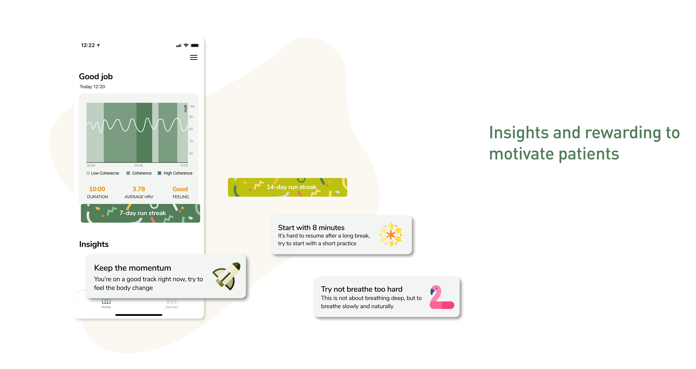
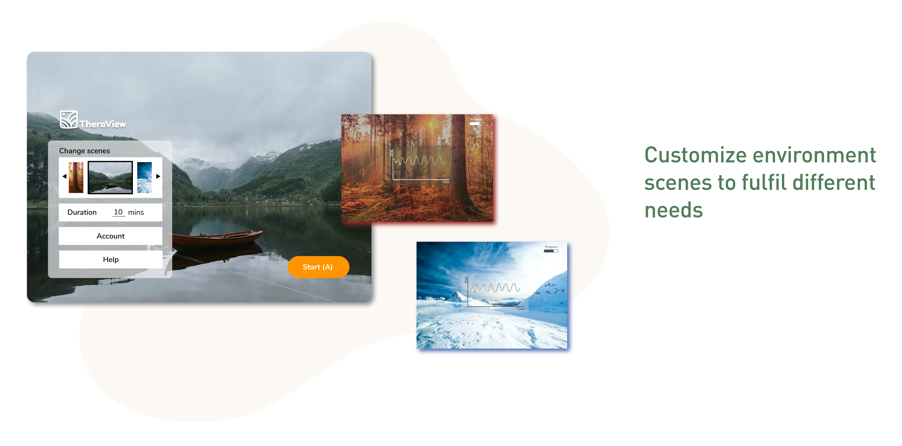

TheraView is an at-home VR biofeedback therapy device with an app for migraine patients to guide, track the biofeedback therapy and help patients to build a habit of biofeedback.
Time:
February 2020 - June 2020
Role:
Lead the primary user research and user evaluation, translate insights into actionable design solutions;
In charge of UX design, designed the interface
Team:
Ke Wang: UX Researcher and Designer
Frank Zhou: Software Engineer
Robin Yang: VR prototyper
Collaborate with UW Medicine
Overview
Problem
Migraines cause a lot of people a lot of pain. In fact, 12% of the population suffers from migraines and it is the 6th highest cause of years lost due to disability worldwide. All of this pain leads patients to resort to medications. However, 37% of patients or more are dissatisfied with their current medicine regiment.
Thus, how can we leverage technology to serve as an add-on treatment for migraine patients?
Solution
Biofeedback is a proven therapy that is traditionally performed in clinics with professional assistance.
VR can provide access to simulated environments that supports mental health. It’s an emerging technology with a promising ability to treat pain. So we bring biofeedback therapy into VR environment to boost the effectiveness of this treatment.Other than that, we designed a mobile app to track therapy progress and send notification for chronic pain management .
Outcome
The poster of our product is accepted by IEEE GHTC 2020. The medical trial is running right now. We're planning to develop the phone-based VR version with other collaboration.
Process
Research
What're the current treatments for migraines and what can we do to make it better with technology?
Expert Interview
None of us are from medical background, so we reached out to doctors for possible solutions. They introduced biofeedback, a behavioral migraine treatment that has grade A evidence for prevention of migraine to us. Biofeedback works by measuring physiological metrics and reporting them back to the patient through the use of physiological sensors, a biofeedback device, and some form of audio-visual stimulation. Typically, a trained physician or therapist is present to interpret the data and identify techniques to help the patient regulate their processes.
They are currently using this method in their clinic. The current device they’re using, the HearMath emWave2 is a hand-held device with LED breath guidance. They wanted to explore more possible solutions to make it more efficient and engaging.
Table Research
Based on the literature on migraines, chronic pain management, pain relief and biofeedback, we have several interesting findings:
VR is a promising new area for pain relief. According to research, it can reduce pain by 20 - 37% for burn patients.
The VR environment distracts patients so that they are not aware of pain.
Biofeedback is a therapy that requires patients to fully devote themselves to it so they can continuously adjust their physical status.
Based on these findings and the discussion with doctors, we believe VR can contribute to the effectiveness of traditional biofeedback therapy.
Now we find a possible way, but can migraine patients accept it? How can we make this therapy more accessible and useful for them?
Interview
Interview aims to build empathy with migraine patients and get the pulse of their lifestyle. We interviewed 3 people who suffered from migraines and 1 person who have a headache.
The research questions are how do people feel and react to migraines and what are their challenges and what do patients expect from the treatment of migraines?
Diary Study
The purpose of diary study is to understand the use scenarios by simulating real tasks and gathering timely feedback. Four participants who have headaches participated in our diary study. They were asked to use Oak which is a breath training application 10 minutes everyday and mark down their headaches and any corresponding sensations feelings.
Survey
Surveys let us to have a breadth understanding of patients in various range of population, validate our findings and find the pattern between behaviors and attitudes. We have 96 responses in total.
The interview question include demographic questions, disease and treatment history, attention check question, attitude towards current treatment and goals.
Triangulation
When patients have a migraine, it’s usually pretty severe. People are not able to maintain their normal daily routine. Also, the biofeedback works when patients practice keep it on a daily basis practice. -> So our solution should focus on be a daily prevention, not acute treatment.
Participants showed the most hesitation for preventative therapies due to easily forgetting treatment (37.3%) -> Setting a reminder on a mobile app will help them build the habit easily.
People want to adopt a more healthy lifestyle but they experience changes day to day this always changes by day, so they can easily lose momentum on bad days give up easily. -> Our products need to transform the progress they make visible and motivate them to insist.
We have a basic idea, and so we have competitors in the market?
Competitive Analysis

We're targeting on a low cost, high Effectiveness and high disarability and usability position in the market landscape.
Prototype
Our prototype includes a VR app which has a relaxing environment and vocal breath guide and connects with an ECG heart rate sensor to provide feedback and a mobile app which tracks therapy progress and send notification for chronic pain management .
User Flow
HW/SW Diagram and Screenshots
Evaluation
Around 7 people tested with our VR application. The feedback includes:
During the session, most of the users feel it’s hard to visually focus on both the breath guide and biofeedback graph. So then we used verbal instead to eliminate the cognitive load.
All participants asked about their performance in the end so it validated our idea of having an application to track their sessions after practice.
Some participants said they were anxious to think that the session will go on forever. So we add a progress bar in the corner.
Users all prefer a more open environment without such a thick forest. So we changed our environment.
Final Work
 



Click the video to walk through our product.
To be continued
The poster of our product is accepted by IEEE GHTC 2020. The medical trial is running right now. We're planning to develop the phone-based VR version with other collaboration.
Reflection
1. Prioritize the effectiveness of the therapy in medical product
In the agile product design process, we have to put our limited attention in the most important areas. For novice therapy, our prioritization is to figure out the science behind biofeedback and prove its effectiveness through clinical experiments. So we spent most of our time on it in order to push the clinical study forward.
2. Focus on our design more than the therapy itself
When it comes to medical devices, we always focus on the treatment techniques but forget how patients interact with it in their daily lives. Through our research, we found that it’s equally important that patients could trust a therapy, stick to it and allow users to gradually build confidence, especially with chronic pain management.
3. Remote user research can be practical and useful
Covid-19 changed how we interact. We did our research and evaluation remotely. It allowed us to reach out to more users without the limitation of distance, but also made the communication less engaging. We found out that non-verbal expressions can give rich and real feedback, like opening the camera to see users’ facial expressions and let users sketch or upload pictures to show their emotions.